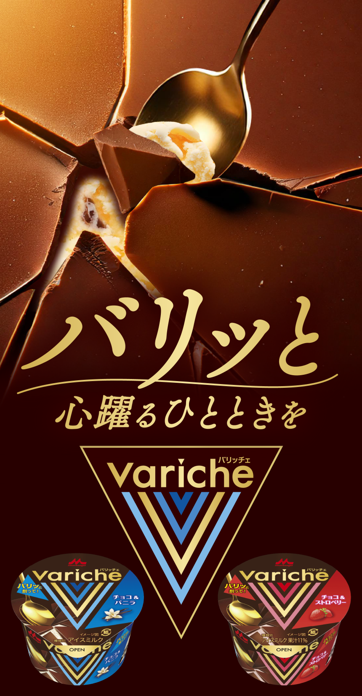
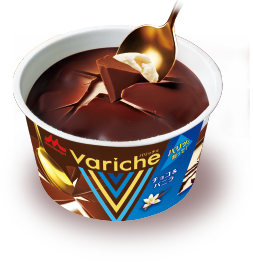
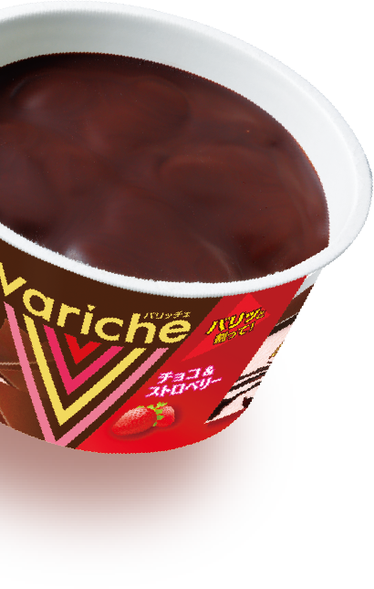
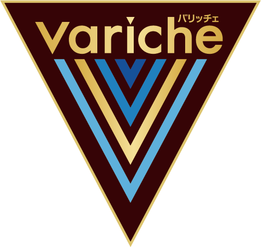
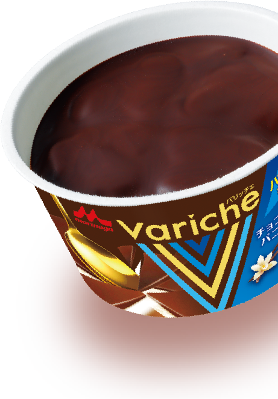
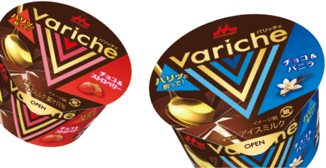

❝音が鳴る❞バリッチェがあるよ！
タップ（クリック）して探してみてね！
上質な
バリッと体験、
はじめよう
心躍るひとときを過ごして
前向きな気持ちになってほしい、
そんな想いからうまれたVaricheは
最後のひとくちまでチョコを
贅沢に味わえるカップアイスです。
蓋をあけると広がる
カカオの香りに包まれて、
チョコをバリッと割る
心地良い音を
お楽しみいただけます。

すくう場所によって
厚みが異なる天面のチョコ、
アイスの中にもいろいろな
大きさのチョコ。
ひとくちごとに異なるおいしさがやみつきに。
Varicheのための
オリジナルチョコは
バリッと食感とカカオ香る
濃厚な味わい。
最後のひとくちまで
贅沢にチョコを堪能できます。
チョコを主役に、
ごろっとチョコを楽しめます
アイスを主役に、
チョコのパリパリ食感を
楽しめます



（開発担当者より）
Varicheは、チョコとアイス、それぞれのおいしさを、どちらも主役として楽しめる商品をつくりたいという想いから生まれました。開発には約4年を要し、チョコの味や食感、アイスとの相性、さらには製造方法の確立まで、試行錯誤を重ねてきました。思うように開発が進まず、何度も立ち止まっては最初から考え直す日々でしたが、「おいしい」と笑顔になってくださる方の姿を思い浮かべながら、仲間とともに少しずつ前に進み、ようやく完成した商品です。
Varicheが、皆さまのひとときを少しでも幸せにできたら、これほど嬉しいことはありません。
